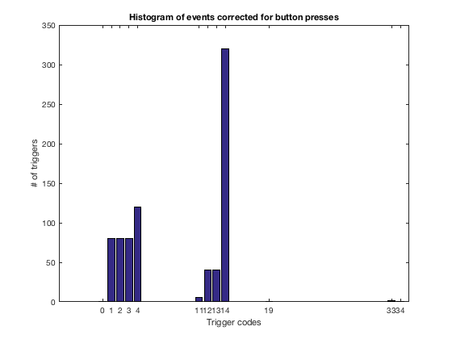
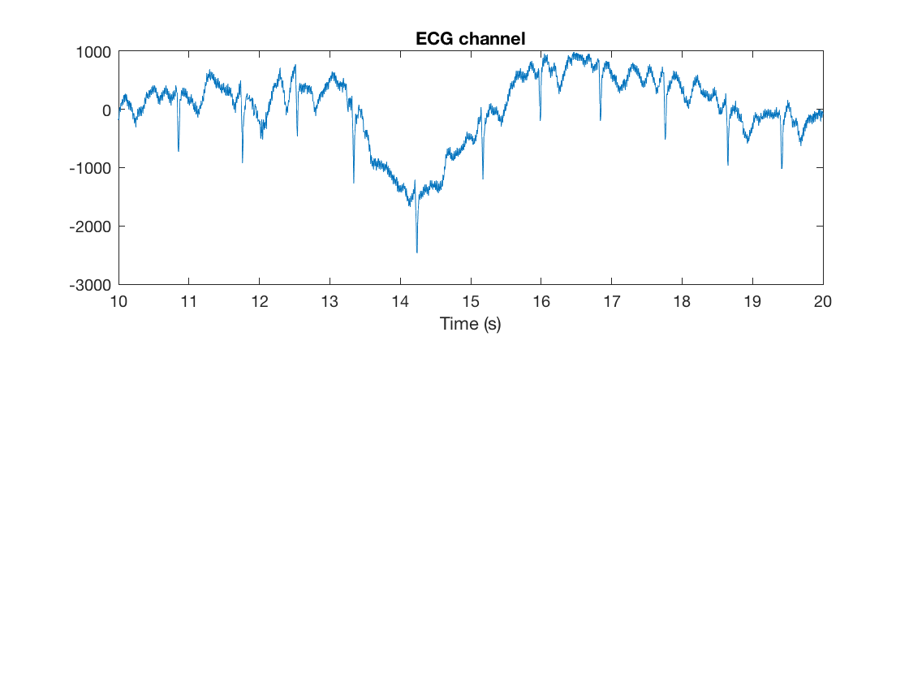
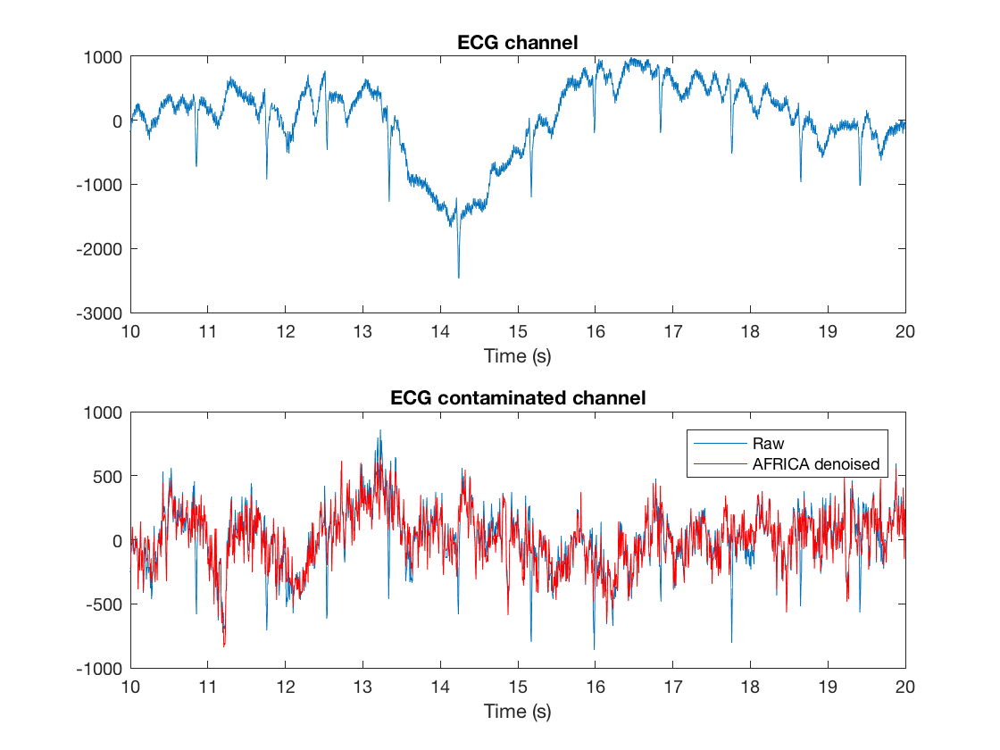
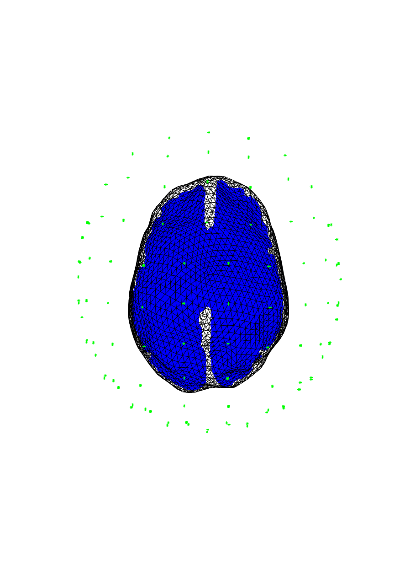
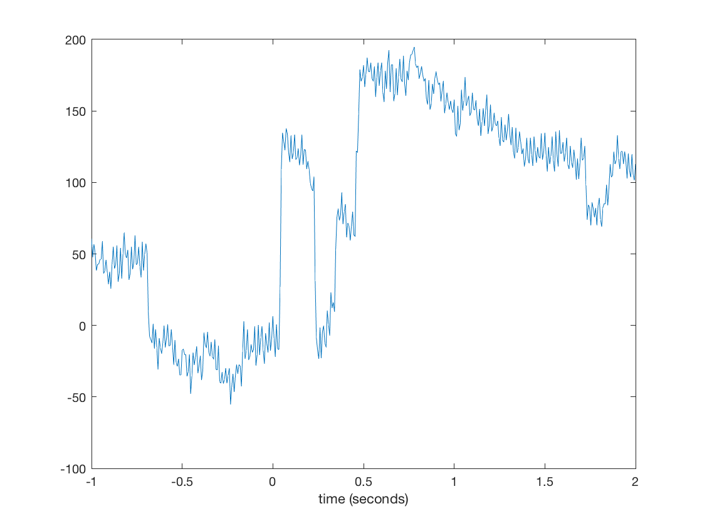
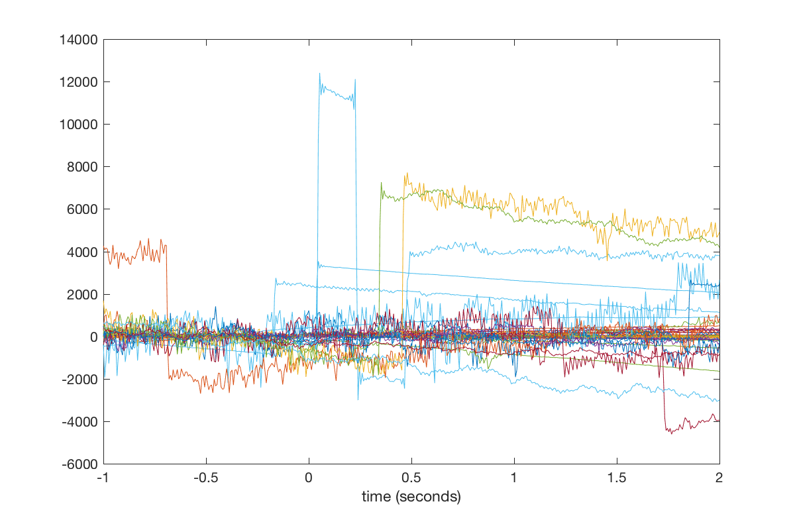
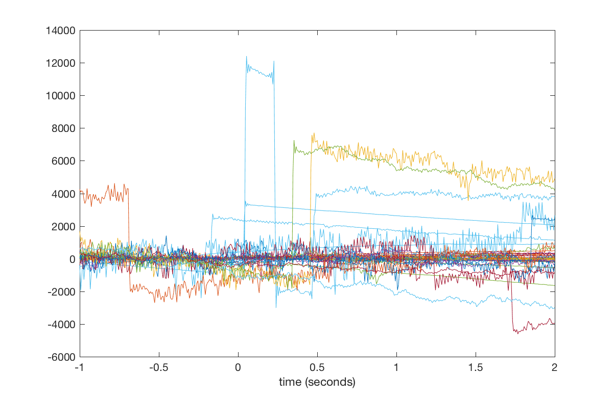
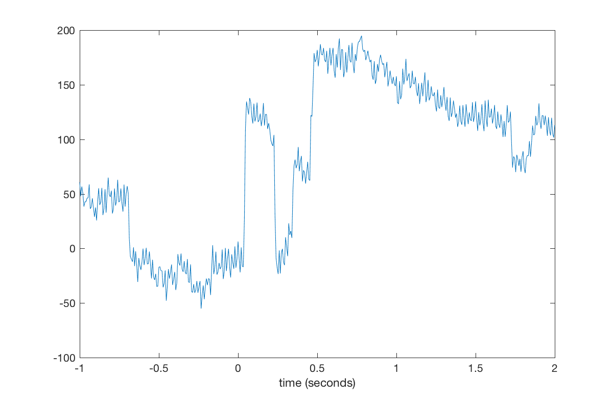
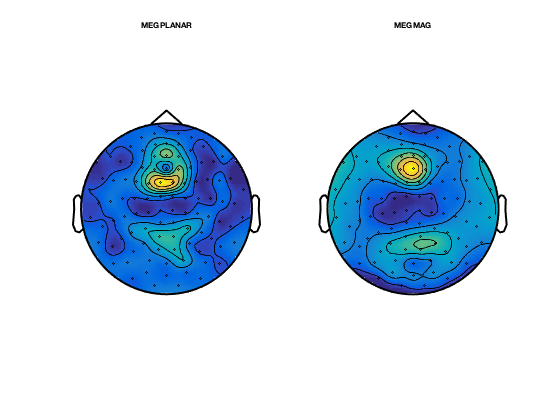

Introduction to manual preprocessing in OSL
In this practical/template script we will work with a single subject's data from an emotional faces task (data courtesy of Susie Murphy). This is contained in the downloadable zip.file available online.
Note that this contains the fif file: fifs/sub1_face_sss.fif that has already been SSS Maxfiltered and downsampled to 250 Hz.
In this example we will take this fif file and run it through a manual preprocessing pipeline
MWW 2013, adapted and updated by RB 2017
Contents
- SETUP THE MATLAB PATHS
- SPECIFY DIRECTORIES AND FILES FOR THIS ANALYSIS
- CONVERT FROM FIF TO AN SPM MEEG OBJECT:
- LOAD THE SPM M/EEG OBJECT
- SOME BASICS ABOUT SPM OBJECTS
- DOWNSAMPLE
- LOAD THE DOWNSAMPLED SPM MEEG OBJECT
- FILTERING
- OSLVIEW
- AFRICA WITH MANUAL COMPONENT REJECTION
- EPOCHING OF DATA
- LOAD THE EPOCHED SPM MEEG OBJECT
- VISUAL ARTEFACT REJECTION
- EXAMINE THE CLEANED EPOCHED DATA
- PLOTTING EVENT-RELATED TOPOGRAPHIES AT DEFINED LATENCIES
SETUP THE MATLAB PATHS
osl_startup;
Warning: Duplicate directory name: /Applications/MATLAB_R2016a.app/toolbox/stateflow/stateflow
SPECIFY DIRECTORIES AND FILES FOR THIS ANALYSIS
% directory where the data is: datadir = fullfile(osldir,'example_data','preproc_example','manual'); % this is the directory the analysis files will be stored in: workingdir=[datadir]; cmd = ['mkdir ' workingdir]; unix(cmd); % make dir to put the results in clear fif_files spm_files_basenames;
mkdir: /Applications/osl/example_data/preproc_example/manual: File exists
Specify a list of the existing fif files for subjects Note that here we only have 1 subject, but more generally there would be more than one, e.g.: fif_files{1}=[testdir '/fifs/sub1_face_sss.fif']; fif_files{2}=[testdir '/fifs/sub2_face_sss.fif']; etc...
fif_files{1}=[datadir '/fifs/sub1_face_sss.fif'];
Setup a list of SPM MEEG object file names to be created, in the same order as spm_files and fif_files: Note that here we only have 1 subject, but more generally there would be more than one, e.g.: spm_files{1}=[workingdir '/spm8_meg1.mat']; spm_files{2}=[workingdir '/spm8_meg1.mat']; etc...
spm_files_basenames{1}=['spm_meg1.mat'];
CONVERT FROM FIF TO AN SPM MEEG OBJECT:
The fif file that we are working with is sub1_face_sss.fif. This has already been max-filtered for you and downsampled to 250Hz.
This will produce a histogram plot showing the number of events detected for each code on the trigger channel. The codes used on the trigger channel for this experiment were:
1 = Neutral face 2 = Happy face 3 = Fearful face 4 = Motorbike 18 = Introduction screen 11 = Break between blocks 19 = Midway break 12 = Green fixation cross (response trials) 13 = Red fixation cross (following green on response trials) 14 = Red fixation cross (non-response trials)
For example, there should be 120 motorbike trials, and 80 of each of the face conditions
for subnum = 1:length(fif_files), % iterates over subjects spm_files{subnum}=[workingdir '/' spm_files_basenames{subnum}]; end if(length(fif_files)>0), S2=[]; for i=1:length(fif_files), % loops over subjects S2.fif_file=fif_files{i}; S2.spm_file=spm_files{i}; S2.trigger_channel_mask='0000000000111111'; % binary mask to use on the trigger channel % The conversion to SPM will show a histogram of the event codes % and correspond to those listed below in the epoching section [D spm_files{i}] = osl_convert_script(S2); end; end; % Note that this spmfile is the output from the conversion: spm_files{1}
SPM12: spm_eeg_convert_4osl (v6190) 21:51:23 - 14/04/2017 ======================================================================== SPM12: spm_eeg_convert_4osl (v6190) 21:51:23 - 14/04/2017 ======================================================================== 306 MEG channel locations transformed Reading /Applications/osl/example_data/preproc_example/manual/fifs/sub1_face_sss.fif ... Opening raw data file /Applications/osl/example_data/preproc_example/manual/fifs/sub1_face_sss.fif... Range : 74500 ... 306499 = 298.000 ... 1225.996 secs Ready. 306 MEG channel locations transformed Reading /Applications/osl/example_data/preproc_example/manual/fifs/sub1_face_sss.fif ... Opening raw data file /Applications/osl/example_data/preproc_example/manual/fifs/sub1_face_sss.fif... Range : 74500 ... 306499 = 298.000 ... 1225.996 secs Ready. Reading 74500 ... 306499 = 298.000 ... 1225.996 secs... [done] 306 MEG channel locations transformed Reading /Applications/osl/example_data/preproc_example/manual/fifs/sub1_face_sss.fif ... Opening raw data file /Applications/osl/example_data/preproc_example/manual/fifs/sub1_face_sss.fif... Range : 74500 ... 306499 = 298.000 ... 1225.996 secs Ready. Warning: Could not obtain electrode locations automatically. 306 MEG channel locations transformed Reading /Applications/osl/example_data/preproc_example/manual/fifs/sub1_face_sss.fif ... Opening raw data file /Applications/osl/example_data/preproc_example/manual/fifs/sub1_face_sss.fif... Range : 74500 ... 306499 = 298.000 ... 1225.996 secs Ready. Data type is missing or incorrect, assigning default. creating layout from cfg.grad creating layout for neuromag306 system Reading 74500 ... 84643 = 298.000 ... 338.572 secs... [done] Reading 84644 ... 94787 = 338.576 ... 379.148 secs... [done] Reading 94788 ... 104931 = 379.152 ... 419.724 secs... [done] Reading 104932 ... 115075 = 419.728 ... 460.300 secs... [done] Reading 115076 ... 125219 = 460.304 ... 500.876 secs... [done] Reading 125220 ... 135363 = 500.880 ... 541.452 secs... [done] Reading 135364 ... 145507 = 541.456 ... 582.028 secs... [done] Reading 145508 ... 155651 = 582.032 ... 622.604 secs... [done] Reading 155652 ... 165795 = 622.608 ... 663.180 secs... [done] Reading 165796 ... 175939 = 663.184 ... 703.756 secs... [done] Reading 175940 ... 186083 = 703.760 ... 744.332 secs... [done] Reading 186084 ... 196227 = 744.336 ... 784.908 secs... [done] Reading 196228 ... 206371 = 784.912 ... 825.484 secs... [done] Reading 206372 ... 216515 = 825.488 ... 866.060 secs... [done] Reading 216516 ... 226659 = 866.064 ... 906.636 secs... [done] Reading 226660 ... 236803 = 906.640 ... 947.212 secs... [done] Reading 236804 ... 246947 = 947.216 ... 987.788 secs... [done] Reading 246948 ... 257091 = 987.792 ... 1028.364 secs... [done] Reading 257092 ... 267235 = 1028.368 ... 1068.940 secs... [done] Reading 267236 ... 277379 = 1068.944 ... 1109.516 secs... [done] Reading 277380 ... 287523 = 1109.520 ... 1150.092 secs... [done] Reading 287524 ... 297667 = 1150.096 ... 1190.668 secs... [done] Reading 297668 ... 306499 = 1190.672 ... 1225.996 secs... [done] 306 MEG channel locations transformed Reading /Applications/osl/example_data/preproc_example/manual/fifs/sub1_face_sss.fif ... Opening raw data file /Applications/osl/example_data/preproc_example/manual/fifs/sub1_face_sss.fif... Range : 74500 ... 306499 = 298.000 ... 1225.996 secs Ready. Warning: Could not obtain electrode locations automatically. 306 MEG channel locations transformed Reading /Applications/osl/example_data/preproc_example/manual/fifs/sub1_face_sss.fif ... Opening raw data file /Applications/osl/example_data/preproc_example/manual/fifs/sub1_face_sss.fif... Range : 74500 ... 306499 = 298.000 ... 1225.996 secs Ready. Data type is missing or incorrect, assigning default. creating layout from cfg.grad creating layout for neuromag306 system ans = /Applications/osl/example_data/preproc_example/manual/spm_meg1.mat
LOAD THE SPM M/EEG OBJECT
Set filenames used in following steps
for subnum = 1:length(spm_files), % iterates over subjects spm_files{subnum}=[workingdir '/' spm_files_basenames{subnum}]; end % load in the SPM MEEG object subnum = 1; D = spm_eeg_load(spm_files{subnum}); % look at the SPM object. Note that it is continuous data, with 232000 time % points at 250Hz. We will epoch the data later. D
SPM M/EEG data object
Type: continuous
Transform: time
1 conditions
323 channels
232000 samples/trial
1 trials
Sampling frequency: 250 Hz
Loaded from file /Applications/osl/example_data/preproc_example/manual/spm_meg1.mat
Use the syntax D(channels, samples, trials) to access the data
Type "methods('meeg')" for the list of methods performing other operations with the object
Type "help meeg/method_name" to get help about methods
SOME BASICS ABOUT SPM OBJECTS
The above output gives you some basic information about the M/EEG object that has been loaded into workspace. Note that the data values themselves are memory-mapped from spm_meg1.dat and can be accessed by indexing the D object (e.g, D(1,2,3) returns the field strength in the first sensor at the second sample point during the third trial).
D.ntrials % will return the number of trials. % Typing D.conditions % will show the list of condition labels for each trial. D.condlist % will display a list of unique condition labels. % If you type D.chanlabels; % , you will see the order and the names of the channels. D.chantype; % will display the type for each channel. D.size
ans =
1
ans =
'Undefined'
ans =
'Undefined'
ans =
323 232000 1
will show the size of the data matrix (for channels, samples and trials respectively). The size of each dimension separately can be accessed by D.nchannels, D.nsamples and D.ntrials. Note that although the syntax of these commands is similar to those used for accessing the fields of a struct data type in Matlab what?s actually happening here is that these commands evoke special functions called ?methods? and these methods collect and return the requested information from the internal data structure of the D object. The internal structure is not accessible directly when working with the object. This mechanism greatly enhances the robustness.
% Type methods('meeg') % for the full list of methods performing operations with the object. % For help on any method, type help meeg/method_name to get help about a method.
Methods for class meeg: Contents fieldnames isfield save badchannels fname islinked sconfounds badsamples fnamedat link selectchannels badtrials frequencies meeg selectdata blank fsample modality sensors chanlabels ftraw montage size chantype fttimelock move subsasgn check fullfile nchannels subsref clone getfield nconditions subsref1 conditions history nfrequencies time condlist indchannel nsamples timeonset coor2D indchantype ntrials transformtype copy indfrequency path trialonset delete indsample reload type display indtrial repl units events isempty rmdata unlink fiducials isequal rmfield
DOWNSAMPLE
(particularly important if movement compensation is used, as this stops you from downsampling when running Maxfilter - but worth doing anyway)
% Set filenames used in following steps for subnum = 1:length(spm_files), % iterates over subjects spm_files{subnum}=[workingdir '/' spm_files_basenames{subnum}]; end % By default, the filtered data set will get the prefix 'f' (preceding the % first one). S=[]; for subnum=1:length(spm_files), % iterates over subjects S.D=spm_files{subnum}; S.fsample_new = 150; % in Hz D = spm_eeg_downsample (S); end
SPM12: spm_eeg_downsample (v6016) 21:51:36 - 14/04/2017 ========================================================================
LOAD THE DOWNSAMPLED SPM MEEG OBJECT
Set filenames used in following steps
for subnum = 1:length(spm_files), % iterates over subjects spm_files{subnum}=[workingdir '/d' spm_files_basenames{subnum}]; end % load in the SPM MEEG object subnum = 1; D = spm_eeg_load(spm_files{subnum}); % look at the SPM object. Note that it is continuous data, with 139200 time % points at 150Hz. We will epoch the data later. D
SPM M/EEG data object
Type: continuous
Transform: time
1 conditions
323 channels
139200 samples/trial
1 trials
Sampling frequency: 150 Hz
Loaded from file /Applications/osl/example_data/preproc_example/manual/dspm_meg1.mat
Use the syntax D(channels, samples, trials) to access the data
Type "methods('meeg')" for the list of methods performing other operations with the object
Type "help meeg/method_name" to get help about methods
FILTERING
Note that there are some large artefacts. Use the oslview functionality to remove the bad epochs (see the osl_example_africa.m practical for how to do this).
%set filenames used in following steps for subnum = 1:length(spm_files), % iterates over subjects spm_files{subnum}=[workingdir '/d' spm_files_basenames{subnum}]; end
First we do a bit of high-pass filtering to remove the worst of the trends The filtered data set will get the prefix 'f' (preceding the first one).
S2=[];
S2.D=spm_files{1};
S2.band='high';
S2.freq=0.1;
D=spm_eeg_filter(S2);
SPM12: spm_eeg_filter (v5876) 21:51:42 - 14/04/2017 ========================================================================
OSLVIEW
Now load oslview. This data has some bad artefacts in. Mark the epochs at around 325s, 380s and 600s as bad. Marking is done by right-clicking in the proximity of the event and click on 'Mark Event'. A first click (green dashed label) marks the begin of a bad period, a nother second click indicates the end (in red). Also, mark the really bad artefacts at the end of the the experiment from about 650 secs to the end. This will mean that we are not using about half of the data. But with such bad artefacts this is the best we can do. We can still obtain good results with what remains. push disk button to save to disk (same name)
D=oslview(D); keyboard;
AFRICA WITH MANUAL COMPONENT REJECTION
Run AFRICA ICA denoising. AFRICA uses independent component analysis to decompose sensor data into a set of maximally independent time courses. Using this framework, sources of interference such as eye-blinks, ECG artefacts and mains noise can be identified and removed from the data. % % In this practical we will use manual artefact rejection by looking at the time courses and sensor topographies of each component and rejecting those that correlate with EOG and ECG measurements. The user interface displays the time course, power spectrum and sensor topography for each component. These components are sorted based on one of a number of metrics, which you can toggle using the dropdown menu.
% Set new SPM MEEG object filenames to be used in following steps for subnum = 1:length(spm_files), % iterates over subjects spm_files{subnum}=[workingdir '/fd' spm_files_basenames{subnum}]; end
Scroll through components using the cursor keys. Identify the two components that correlate with the EOG and ECG measurements and mark them for rejection using the red cross. NB: Just close the window when finished to save your results.
for subnum = 1:length(spm_files) [dirname,filename] = fileparts(spm_files{subnum}); S = []; S.D = spm_files{subnum}; S.logfile = 1; S.ica_file = fullfile(dirname,[filename '_africa']); S.used_maxfilter = 1; S.ident.func = @identify_artefactual_components_manual; S.to_do = [1 1 1]; S.ident.artefact_chans = {'EOG','ECG'}; osl_africa(S); end
Number of signals: 306
Number of samples: 91307
Calculating covariance...
Reducing dimension...
Selected [ 62 ] dimensions.
Smallest remaining (non-zero) eigenvalue [ 2.25931 ]
Largest remaining (non-zero) eigenvalue [ 51058 ]
Sum of removed eigenvalues [ 7.96607 ]
[ 99.9916 ] % of (non-zero) eigenvalues retained.
Whitening...
Check: covariance differs from identity by [ 5.16884e-13 ].
Used approach [ symm ].
Used nonlinearity [ tanh ].
Using stabilized algorithm.
Starting ICA calculation...
Step no. 1
Step no. 2, change in value of estimate: 0.808
Step no. 3, change in value of estimate: 0.943
Step no. 4, change in value of estimate: 0.974
Step no. 5, change in value of estimate: 0.983
Step no. 6, change in value of estimate: 0.623
Step no. 7, change in value of estimate: 0.157
Step no. 8, change in value of estimate: 0.0559
Step no. 9, change in value of estimate: 0.0265
Step no. 10, change in value of estimate: 0.0302
Step no. 11, change in value of estimate: 0.0214
Step no. 12, change in value of estimate: 0.0128
Step no. 13, change in value of estimate: 0.00953
Step no. 14, change in value of estimate: 0.00916
Step no. 15, change in value of estimate: 0.0067
Step no. 16, change in value of estimate: 0.00438
Step no. 17, change in value of estimate: 0.00441
Step no. 18, change in value of estimate: 0.0047
Step no. 19, change in value of estimate: 0.00481
Step no. 20, change in value of estimate: 0.00451
Step no. 21, change in value of estimate: 0.00485
Step no. 22, change in value of estimate: 0.00532
Step no. 23, change in value of estimate: 0.0056
Step no. 24, change in value of estimate: 0.00515
Step no. 25, change in value of estimate: 0.00385
Step no. 26, change in value of estimate: 0.00246
Step no. 27, change in value of estimate: 0.00159
Step no. 28, change in value of estimate: 0.00111
Step no. 29, change in value of estimate: 0.000849
Step no. 30, change in value of estimate: 0.000818
Step no. 31, change in value of estimate: 0.000782
Step no. 32, change in value of estimate: 0.000756
Step no. 33, change in value of estimate: 0.000731
Step no. 34, change in value of estimate: 0.000709
Step no. 35, change in value of estimate: 0.000764
Step no. 36, change in value of estimate: 0.000849
Step no. 37, change in value of estimate: 0.000943
Step no. 38, change in value of estimate: 0.00105
Step no. 39, change in value of estimate: 0.00115
Step no. 40, change in value of estimate: 0.00124
Step no. 41, change in value of estimate: 0.00131
Step no. 42, change in value of estimate: 0.00134
Step no. 43, change in value of estimate: 0.00159
Step no. 44, change in value of estimate: 0.00194
Step no. 45, change in value of estimate: 0.00234
Step no. 46, change in value of estimate: 0.00278
Step no. 47, change in value of estimate: 0.00322
Step no. 48, change in value of estimate: 0.0036
Step no. 49, change in value of estimate: 0.00381
Step no. 50, change in value of estimate: 0.00371
Step no. 51, change in value of estimate: 0.00318
Step no. 52, change in value of estimate: 0.00236
Step no. 53, change in value of estimate: 0.00155
Step no. 54, change in value of estimate: 0.000931
Step no. 55, change in value of estimate: 0.00071
Step no. 56, change in value of estimate: 0.000583
Step no. 57, change in value of estimate: 0.000462
Step no. 58, change in value of estimate: 0.000366
Step no. 59, change in value of estimate: 0.000294
Step no. 60, change in value of estimate: 0.00024
Step no. 61, change in value of estimate: 0.000201
Step no. 62, change in value of estimate: 0.000173
Step no. 63, change in value of estimate: 0.000153
Step no. 64, change in value of estimate: 0.00014
Step no. 65, change in value of estimate: 0.00013
Step no. 66, change in value of estimate: 0.000123
Step no. 67, change in value of estimate: 0.000118
Step no. 68, change in value of estimate: 0.000114
Step no. 69, change in value of estimate: 0.000112
Step no. 70, change in value of estimate: 0.000111
Step no. 71, change in value of estimate: 0.000112
Step no. 72, change in value of estimate: 0.000114
Step no. 73, change in value of estimate: 0.000117
Step no. 74, change in value of estimate: 0.000123
Step no. 75, change in value of estimate: 0.000132
Step no. 76, change in value of estimate: 0.000143
Step no. 77, change in value of estimate: 0.000158
Step no. 78, change in value of estimate: 0.000176
Step no. 79, change in value of estimate: 0.000198
Step no. 80, change in value of estimate: 0.000222
Step no. 81, change in value of estimate: 0.000248
Step no. 82, change in value of estimate: 0.000274
Step no. 83, change in value of estimate: 0.000298
Step no. 84, change in value of estimate: 0.000319
Step no. 85, change in value of estimate: 0.000333
Step no. 86, change in value of estimate: 0.000339
Step no. 87, change in value of estimate: 0.000336
Step no. 88, change in value of estimate: 0.000322
Step no. 89, change in value of estimate: 0.0003
Step no. 90, change in value of estimate: 0.00027
Step no. 91, change in value of estimate: 0.000237
Step no. 92, change in value of estimate: 0.000204
Step no. 93, change in value of estimate: 0.000172
Step no. 94, change in value of estimate: 0.000142
Step no. 95, change in value of estimate: 0.000117
Convergence after 96 steps
Adding the mean back to the data.
Saving ICA results to /Applications/osl/example_data/preproc_example/manual/fdspm_meg1_africa.mat
Precomputing sensor topographies for modality MEGMAG
Precomputing sensor topographies for modality MEGPLANAR
Saving metrics and topos to /Applications/osl/example_data/preproc_example/manual/fdspm_meg1_africa.mat
Warning: The DrawMode property will be removed in a future release. Use the
SortMethod property instead.
Warning: The DrawMode property will be removed in a future release. Use the
SortMethod property instead.
Warning: The DrawMode property will be removed in a future release. Use the
SortMethod property instead.
Warning: The DrawMode property will be removed in a future release. Use the
SortMethod property instead.
Warning: The DrawMode property will be removed in a future release. Use the
SortMethod property instead.
Warning: The DrawMode property will be removed in a future release. Use the
SortMethod property instead.
Saving bad component selection to /Applications/osl/example_data/preproc_example/manual/fdspm_meg1_africa.mat
SPM12: spm_eeg_montage (v6370) 23:37:37 - 14/04/2017
========================================================================
Warning: copying input chantype to montage
Warning: copying input chanunit to montage
Warning: assuming that planar channel units are T/mm
creating layout from cfg.grad
Warning: UndoBalancing is disabled. Your analysis will proceed using the
third-order gradiometer-corrected signals.
creating layout for neuromag306 system
SPM M/EEG data object
Type: continuous
Transform: time
1 conditions
323 channels
139200 samples/trial
1 trials
Sampling frequency: 150 Hz
Loaded from file /Applications/osl/example_data/preproc_example/manual/Mfdspm_meg1.mat
Use the syntax D(channels, samples, trials) to access the data
Type "methods('meeg')" for the list of methods performing other operations with the object
Type "help meeg/method_name" to get help about methods
SPM12: spm_eeg_copy (v5079) 23:37:45 - 14/04/2017
========================================================================
Now, after having done AFRICA denoising, let's have a look at the differences. AFRICA saved the cleaned data by default with 'A' preceding all other prefixes. However, it also saved an online montage to the current D object. This is what we will use now to have a look.
for subnum = 1:length(spm_files), % iterates over subjects spm_files{subnum}=[workingdir '/fd' spm_files_basenames{subnum}]; end
We load in the SPM M/EEG object
subnum = 1;
D = spm_eeg_load(spm_files{subnum});
We load the data in, just switching between RAW and AFRICA denoised version.
D_raw=D.montage('switch',0); D_africa=D.montage('switch',1);
The first part is to plot the ECG channel included in the recording as reference.
figure; subplot(2,1,1); plot(D_raw.time(1:10000),D_raw(308,1:10000)) title('ECG channel') xlim([10 20]);xlabel('Time (s)')
In a second part we plot both a channel that has some ECG artifacts in without any preprocessing and with AFRICA run on it. The difference is clearly there.
subplot(2,1,2); plot(D_raw.time(1:10000),D_raw(306,1:10000)) title('ECG contaminated channel') xlim([10 20]); hold on; plot(D_africa.time(1:10000),D_africa(306,1:10000),'r'); xlim([10 20]);xlabel('Time (s)'); legend({'Raw' 'AFRICA denoised'})
EPOCHING OF DATA
Does preliminary epoching for the purpose of finding outliers This is not the final epoching. Instead this sets up the epoch definitions, and performs a temporary epoching for the purpose of doing semi-automated outlier trial rejection (before running the fully automated OAT). The epoch definitions and the continuous data will be kept and passed into OAT. This is so that things like temporal filtering (which is dones as part of OAT) can be done on the continuous data, before the data is epoched inside OAT. Note that this will also remove those trials that overlap with the bad epochs identified using OSLview. Here the epochs are set to be from -1000ms to +2000ms relative to the triggers in the MEG data. We also specify the trigger values for each of the 4 epoch types of interest (motorcycle images, neutral faces, fearful faces, happy faces). The codes used on the trigger channel for this experiment were: 1 = Neutral face 2 = Happy face 3 = Fearful face 4 = Motorbike 18 = Introduction screen 11 = Break between blocks 19 = Midway break 12 = Green fixation cross (response trials) 13 = Red fixation cross (following green on response trials) 14 = Red fixation cross (non-response trials) Note that we're only interested in the first 4 event codes listed here for today's workshop.
Set filenames used in following step
for subnum = 1:length(spm_files), % iterates over subjects spm_files{subnum}=[workingdir '/fd' spm_files_basenames{subnum}]; end % Iterating over subjects for i=1:length(spm_files), % define the trials we want from the event information S2 = []; S2.D = spm_files{i}; D_continuous=spm_eeg_load(S2.D); D_continuous=D_continuous.montage('switch',0); pretrig = -1000; % epoch start in ms posttrig = 2000; % epoch end in ms S2.timewin = [pretrig posttrig]; % event definitions S2.trialdef(1).conditionlabel = 'Neutral face'; S2.trialdef(1).eventtype = 'STI101_down'; S2.trialdef(1).eventvalue = 1; S2.trialdef(2).conditionlabel = 'Happy face'; S2.trialdef(2).eventtype = 'STI101_down'; S2.trialdef(2).eventvalue = 2; S2.trialdef(3).conditionlabel = 'Fearful face'; S2.trialdef(3).eventtype = 'STI101_down'; S2.trialdef(3).eventvalue = 3; S2.trialdef(4).conditionlabel = 'Motorbike'; S2.trialdef(4).eventtype = 'STI101_down'; S2.trialdef(4).eventvalue = 4; S2.reviewtrials = 0; S2.save = 0; S2.epochinfo.padding = 0; S2.event = D_continuous.events; S2.fsample = D_continuous.fsample; S2.timeonset = D_continuous.timeonset; [epochinfo.trl, epochinfo.conditionlabels, S3] = spm_eeg_definetrial(S2); % do epoching S3=[]; S3 = epochinfo; S3.D = D_continuous; D = osl_epoch(S3); end;
SPM12: spm_eeg_definetrial (v6182) 23:37:47 - 14/04/2017 ---------------------------------------------------------------- SPM12: spm_eeg_epochs (v6183) 23:37:47 - 14/04/2017 ======================================================================== Data type is missing or incorrect, assigning default.
LOAD THE EPOCHED SPM MEEG OBJECT
set filenames used in following step. Prefix 'e' is the default prefix for epoched data, followed by the prefixes of preceding preprocessing steps.
for subnum = 1:length(spm_files), % iterates over subjects spm_files{subnum}=[workingdir '/efd' spm_files_basenames{subnum}]; end D = spm_eeg_load(spm_files{subnum}); % look at the SPM object. Note that this is now EPOCHED data D; % Display a list of trial types: D.condlist; % Display time points (in seconds) per trial D.time; % Identify trials of a certain type using the indtrial function. E.g.: motorbike_trls = indtrial(D,'Motorbike');
Identify channels of certain types using the meegchannels function. E.g. identify the channel indices for the planar gradiometers and for the magnetometers (what you have available may depend on the actual MEG device) (Note that you can use 'MEGMAG' to get the gradiometers, and D.chantype gives you a list of all channel types by index).
planars = D.indchantype('MEGPLANAR'); magnetos = D.indchantype('MEGMAG');
We can access the actual MEG data using the syntax: D(channels, samples, trials). E.g. plot a figure showing all the trials for the motorbike condition in the 135th MEGPLANAR channel. Note that the squeeze function is needed to remove single dimensions for passing to the plot function, and D.time is used to return the time labels of the within trial time points in seconds.
figure; plot(D.time,squeeze(D(planars(135),:,motorbike_trls))); xlabel('time (seconds)'); % We can average over all the motorbike trials to get a rudimentary ERF % (Event-Related Field): figure; plot(D.time,squeeze(mean(D(planars(135),:,motorbike_trls),3))); xlabel('time (seconds)'); 
As you will notive, the ERFs look pretty bad. However, we should bear in mind that this data is averaging over all data including noisy data segments, channels and trials. To do better than this we need to perform outlier rejection and exclude bad trials (see below).
VISUAL ARTEFACT REJECTION
This runs a Fieldtrip interactive tool.
- Pass over the first interactive figure as it is the EOG channel - so just press the "quit" button.
This will bring up another interactive figure which will show the magnetometers. You can choose the metric to display - it is best to stick to the default, which is variance. This metric is then displayed for the different trials (bottom left), the different channels (top right), and for the combination of the two (top left). You need to use this information to identify those trials and channels with high variance and remove them.
- Remove the worst channel (with highest variance) by drawing a box around it in the top right plot with the mouse. - Now remove the trials with high variance by drawing a box around them in the bottom left plot. - Repeat this until you are happy that there are no more outliers.
- Press "quit" and repeat the process for the gradiometers.
%set filenames used in following step for subnum = 1:length(spm_files), % iterates over subjects spm_files{subnum}=[workingdir '/efd' spm_files_basenames{subnum}]; end % Run the visual artifact rejection for i=1:length(spm_files), S2=[]; S2.D = spm_files{i}; S2.time_range=[-0.2 0.4]; D2=osl_rejectvisual(S2); end;
No bad channels currently marked.
112 trials of 360 have already been marked as bad.
%%% 1. EOG %%%
mapping condition label "Motorbike" to condition code 1
mapping condition label "Happy face" to condition code 2
mapping condition label "Fearful face" to condition code 3
mapping condition label "Neutral face" to condition code 4
the input is raw data with 323 channels and 248 trials
showing a summary of the data for all channels and trials
computing metric [--------------------------------------------------------/]
234 trials marked as GOOD, 14 trials marked as BAD
1 channels marked as GOOD, 322 channels marked as BAD
the following trials were removed: 63, 72, 76, 80, 81, 84, 112, 114, 131, 153, 154, 156, 169, 170
the following channels were removed: MEG0113, MEG0112, MEG0111, MEG0122, MEG0123, MEG0121, MEG0132, MEG0133, MEG0131, MEG0143, MEG0142, MEG0141, MEG0213, MEG0212, MEG0211, MEG0222, MEG0223, MEG0221, MEG0232, MEG0233, MEG0231, MEG0243, MEG0242, MEG0241, MEG0313, MEG0312, MEG0311, MEG0322, MEG0323, MEG0321, MEG0333, MEG0332, MEG0331, MEG0343, MEG0342, MEG0341, MEG0413, MEG0412, MEG0411, MEG0422, MEG0423, MEG0421, MEG0432, MEG0433, MEG0431, MEG0443, MEG0442, MEG0441, MEG0513, MEG0512, MEG0511, MEG0523, MEG0522, MEG0521, MEG0532, MEG0533, MEG0531, MEG0542, MEG0543, MEG0541, MEG0613, MEG0612, MEG0611, MEG0622, MEG0623, MEG0621, MEG0633, MEG0632, MEG0631, MEG0642, MEG0643, MEG0641, MEG0713, MEG0712, MEG0711, MEG0723, MEG0722, MEG0721, MEG0733, MEG0732, MEG0731, MEG0743, MEG0742, MEG0741, MEG0813, MEG0812, MEG0811, MEG0822, MEG0823, MEG0821, MEG0913, MEG0912, MEG0911, MEG0923, MEG0922, MEG0921, MEG0932, MEG0933, MEG0931, MEG0942, MEG0943, MEG0941, MEG1013, MEG1012, MEG1011, MEG1023, MEG1022, MEG1021, MEG1032, MEG1033, MEG1031, MEG1043, MEG1042, MEG1041, MEG1112, MEG1113, MEG1111, MEG1123, MEG1122, MEG1121, MEG1133, MEG1132, MEG1131, MEG1142, MEG1143, MEG1141, MEG1213, MEG1212, MEG1211, MEG1223, MEG1222, MEG1221, MEG1232, MEG1233, MEG1231, MEG1243, MEG1242, MEG1241, MEG1312, MEG1313, MEG1311, MEG1323, MEG1322, MEG1321, MEG1333, MEG1332, MEG1331, MEG1342, MEG1343, MEG1341, MEG1412, MEG1413, MEG1411, MEG1423, MEG1422, MEG1421, MEG1433, MEG1432, MEG1431, MEG1442, MEG1443, MEG1441, MEG1512, MEG1513, MEG1511, MEG1522, MEG1523, MEG1521, MEG1533, MEG1532, MEG1531, MEG1543, MEG1542, MEG1541, MEG1613, MEG1612, MEG1611, MEG1622, MEG1623, MEG1621, MEG1632, MEG1633, MEG1631, MEG1643, MEG1642, MEG1641, MEG1713, MEG1712, MEG1711, MEG1722, MEG1723, MEG1721, MEG1732, MEG1733, MEG1731, MEG1743, MEG1742, MEG1741, MEG1813, MEG1812, MEG1811, MEG1822, MEG1823, MEG1821, MEG1832, MEG1833, MEG1831, MEG1843, MEG1842, MEG1841, MEG1912, MEG1913, MEG1911, MEG1923, MEG1922, MEG1921, MEG1932, MEG1933, MEG1931, MEG1943, MEG1942, MEG1941, MEG2013, MEG2012, MEG2011, MEG2023, MEG2022, MEG2021, MEG2032, MEG2033, MEG2031, MEG2042, MEG2043, MEG2041, MEG2113, MEG2112, MEG2111, MEG2122, MEG2123, MEG2121, MEG2133, MEG2132, MEG2131, MEG2143, MEG2142, MEG2141, MEG2212, MEG2213, MEG2211, MEG2223, MEG2222, MEG2221, MEG2233, MEG2232, MEG2231, MEG2242, MEG2243, MEG2241, MEG2312, MEG2313, MEG2311, MEG2323, MEG2322, MEG2321, MEG2332, MEG2333, MEG2331, MEG2343, MEG2342, MEG2341, MEG2412, MEG2413, MEG2411, MEG2423, MEG2422, MEG2421, MEG2433, MEG2432, MEG2431, MEG2442, MEG2443, MEG2441, MEG2512, MEG2513, MEG2511, MEG2522, MEG2523, MEG2521, MEG2533, MEG2532, MEG2531, MEG2543, MEG2542, MEG2541, MEG2612, MEG2613, MEG2611, MEG2623, MEG2622, MEG2621, MEG2633, MEG2632, MEG2631, MEG2642, MEG2643, MEG2641, ECG062, STI101, STI201, STI301, MISC201, MISC202, MISC203, MISC204, MISC205, MISC206, MISC301, MISC302, MISC303, MISC304, MISC305, MISC306
SPM M/EEG data object
Type: single
Transform: time
4 conditions
323 channels
451 samples/trial
360 trials
Sampling frequency: 150 Hz
Loaded from file /Applications/osl/example_data/preproc_example/manual/efdspm_meg1.mat
1 online montage(s) setup
Current montage applied (0=none): 0
Use the syntax D(channels, samples, trials) to access the data
Type "methods('meeg')" for the list of methods performing other operations with the object
Type "help meeg/method_name" to get help about methods
%%% 2. MAGNETOMETERS %%%
mapping condition label "Motorbike" to condition code 1
mapping condition label "Happy face" to condition code 2
mapping condition label "Fearful face" to condition code 3
mapping condition label "Neutral face" to condition code 4
the input is raw data with 323 channels and 234 trials
showing a summary of the data for all channels and trials
computing metric [--------------------------------------------------------/]
233 trials marked as GOOD, 1 trials marked as BAD
102 channels marked as GOOD, 221 channels marked as BAD
the following trials were removed: 76
the following channels were removed: MEG0113, MEG0112, MEG0122, MEG0123, MEG0132, MEG0133, MEG0143, MEG0142, MEG0213, MEG0212, MEG0222, MEG0223, MEG0232, MEG0233, MEG0243, MEG0242, MEG0313, MEG0312, MEG0322, MEG0323, MEG0333, MEG0332, MEG0343, MEG0342, MEG0413, MEG0412, MEG0422, MEG0423, MEG0432, MEG0433, MEG0443, MEG0442, MEG0513, MEG0512, MEG0523, MEG0522, MEG0532, MEG0533, MEG0542, MEG0543, MEG0613, MEG0612, MEG0622, MEG0623, MEG0633, MEG0632, MEG0642, MEG0643, MEG0713, MEG0712, MEG0723, MEG0722, MEG0733, MEG0732, MEG0743, MEG0742, MEG0813, MEG0812, MEG0822, MEG0823, MEG0913, MEG0912, MEG0923, MEG0922, MEG0932, MEG0933, MEG0942, MEG0943, MEG1013, MEG1012, MEG1023, MEG1022, MEG1032, MEG1033, MEG1043, MEG1042, MEG1112, MEG1113, MEG1123, MEG1122, MEG1133, MEG1132, MEG1142, MEG1143, MEG1213, MEG1212, MEG1223, MEG1222, MEG1232, MEG1233, MEG1243, MEG1242, MEG1312, MEG1313, MEG1323, MEG1322, MEG1333, MEG1332, MEG1342, MEG1343, MEG1412, MEG1413, MEG1423, MEG1422, MEG1433, MEG1432, MEG1442, MEG1443, MEG1512, MEG1513, MEG1522, MEG1523, MEG1533, MEG1532, MEG1543, MEG1542, MEG1613, MEG1612, MEG1622, MEG1623, MEG1632, MEG1633, MEG1643, MEG1642, MEG1713, MEG1712, MEG1722, MEG1723, MEG1732, MEG1733, MEG1743, MEG1742, MEG1813, MEG1812, MEG1822, MEG1823, MEG1832, MEG1833, MEG1843, MEG1842, MEG1912, MEG1913, MEG1923, MEG1922, MEG1932, MEG1933, MEG1943, MEG1942, MEG2013, MEG2012, MEG2023, MEG2022, MEG2032, MEG2033, MEG2042, MEG2043, MEG2113, MEG2112, MEG2122, MEG2123, MEG2133, MEG2132, MEG2143, MEG2142, MEG2212, MEG2213, MEG2223, MEG2222, MEG2233, MEG2232, MEG2242, MEG2243, MEG2312, MEG2313, MEG2323, MEG2322, MEG2332, MEG2333, MEG2343, MEG2342, MEG2412, MEG2413, MEG2423, MEG2422, MEG2433, MEG2432, MEG2442, MEG2443, MEG2512, MEG2513, MEG2522, MEG2523, MEG2533, MEG2532, MEG2543, MEG2542, MEG2612, MEG2613, MEG2623, MEG2622, MEG2633, MEG2632, MEG2642, MEG2643, EOG061, ECG062, STI101, STI201, STI301, MISC201, MISC202, MISC203, MISC204, MISC205, MISC206, MISC301, MISC302, MISC303, MISC304, MISC305, MISC306
SPM M/EEG data object
Type: single
Transform: time
4 conditions
323 channels
451 samples/trial
360 trials
Sampling frequency: 150 Hz
Loaded from file /Applications/osl/example_data/preproc_example/manual/efdspm_meg1.mat
1 online montage(s) setup
Current montage applied (0=none): 0
Use the syntax D(channels, samples, trials) to access the data
Type "methods('meeg')" for the list of methods performing other operations with the object
Type "help meeg/method_name" to get help about methods
%%% 3. PLANAR GRADIOMETERS %%%
mapping condition label "Motorbike" to condition code 1
mapping condition label "Happy face" to condition code 2
mapping condition label "Fearful face" to condition code 3
mapping condition label "Neutral face" to condition code 4
the input is raw data with 323 channels and 233 trials
showing a summary of the data for all channels and trials
computing metric [--------------------------------------------------------/]
227 trials marked as GOOD, 6 trials marked as BAD
204 channels marked as GOOD, 119 channels marked as BAD
the following trials were removed: 124, 125, 127, 160, 162, 206
the following channels were removed: MEG0111, MEG0121, MEG0131, MEG0141, MEG0211, MEG0221, MEG0231, MEG0241, MEG0311, MEG0321, MEG0331, MEG0341, MEG0411, MEG0421, MEG0431, MEG0441, MEG0511, MEG0521, MEG0531, MEG0541, MEG0611, MEG0621, MEG0631, MEG0641, MEG0711, MEG0721, MEG0731, MEG0741, MEG0811, MEG0821, MEG0911, MEG0921, MEG0931, MEG0941, MEG1011, MEG1021, MEG1031, MEG1041, MEG1111, MEG1121, MEG1131, MEG1141, MEG1211, MEG1221, MEG1231, MEG1241, MEG1311, MEG1321, MEG1331, MEG1341, MEG1411, MEG1421, MEG1431, MEG1441, MEG1511, MEG1521, MEG1531, MEG1541, MEG1611, MEG1621, MEG1631, MEG1641, MEG1711, MEG1721, MEG1731, MEG1741, MEG1811, MEG1821, MEG1831, MEG1841, MEG1911, MEG1921, MEG1931, MEG1941, MEG2011, MEG2021, MEG2031, MEG2041, MEG2111, MEG2121, MEG2131, MEG2141, MEG2211, MEG2221, MEG2231, MEG2241, MEG2311, MEG2321, MEG2331, MEG2341, MEG2411, MEG2421, MEG2431, MEG2441, MEG2511, MEG2521, MEG2531, MEG2541, MEG2611, MEG2621, MEG2631, MEG2641, EOG061, ECG062, STI101, STI201, STI301, MISC201, MISC202, MISC203, MISC204, MISC205, MISC206, MISC301, MISC302, MISC303, MISC304, MISC305, MISC306
SPM M/EEG data object
Type: single
Transform: time
4 conditions
323 channels
451 samples/trial
360 trials
Sampling frequency: 150 Hz
Loaded from file /Applications/osl/example_data/preproc_example/manual/efdspm_meg1.mat
1 online montage(s) setup
Current montage applied (0=none): 0
Use the syntax D(channels, samples, trials) to access the data
Type "methods('meeg')" for the list of methods performing other operations with the object
Type "help meeg/method_name" to get help about methods
Warning: No axial gradiometers found.
Warning: No EEG channels found.
No bad channels marked.
133 trials of 360 are now been marked as bad.
EXAMINE THE CLEANED EPOCHED DATA
We can now repeat the average over all the motorbike trials with the bad trials removed to get a rudimentary ERF (Event-Related Field).
% Set new SPM MEEG object filenames to be used in following steps for subnum = 1:length(spm_files), % iterates over subjects spm_files{subnum}=[workingdir '/efd' spm_files_basenames{subnum}]; end % load in SPM MEEG object subnum = 1; D = spm_eeg_load(spm_files{subnum}); % switch to montage zero (raw) D_raw=D.montage('switch',0) planars = D_raw.indchantype('MEGPLANAR'); magnetos = D_raw.indchantype('MEGMAG'); % List the marked bad channels D_raw.badchannels % List the marked bad trials D_raw.badtrials % Identify the motorbike trials. Note that indtrial includes good AND bad % trials, so bad trials need to be excluded. good_motorbike_trls = setdiff(D_raw.indtrial('Motorbike'),D.badtrials);
SPM M/EEG data object
Type: single
Transform: time
4 conditions
323 channels
451 samples/trial
360 trials
Sampling frequency: 150 Hz
Loaded from file /Applications/osl/example_data/preproc_example/manual/efdspm_meg1.mat
1 online montage(s) setup
Current montage applied (0=none): 0
Use the syntax D(channels, samples, trials) to access the data
Type "methods('meeg')" for the list of methods performing other operations with the object
Type "help meeg/method_name" to get help about methods
ans =
Empty matrix: 1-by-0
ans =
Columns 1 through 13
63 72 76 79 80 81 84 112 114 131 134 135 136
Columns 14 through 26
137 138 139 140 141 142 143 144 145 147 158 159 160
Columns 27 through 39
161 162 163 164 165 166 167 168 169 170 176 177 179
Columns 40 through 52
192 193 198 200 244 246 247 248 249 250 251 252 253
Columns 53 through 65
254 255 256 257 284 285 286 287 288 289 290 291 292
Columns 66 through 78
293 294 295 296 297 298 299 300 301 302 303 304 305
Columns 79 through 91
306 307 308 309 310 311 312 313 314 315 316 317 318
Columns 92 through 104
319 320 321 322 323 324 325 326 327 328 329 330 331
Columns 105 through 117
332 333 334 335 336 337 338 339 340 341 342 343 344
Columns 118 through 130
345 346 347 348 349 350 351 352 353 354 355 356 357
Columns 131 through 133
358 359 360
here we switch to online montage 1. Montages are linear combinations of the sensor data (= montage 0) that can be used to do basically any linear operation and be able to switch between different linear mixings Keep in mind that switching is not enough, you need to assign the switched montage a variable (if same it gets overwritten). Without output it will switch, but the D object will not actually change.
D_africa=D.montage('switch',1)
SPM M/EEG data object
Type: single
Transform: time
4 conditions
306 channels
451 samples/trial
360 trials
Sampling frequency: 150 Hz
Loaded from file /Applications/osl/example_data/preproc_example/manual/efdspm_meg1.mat
1 online montage(s) setup
Current montage applied (0=none): 1 ,named: "AFRICA denoised data"
Use the syntax D(channels, samples, trials) to access the data
Type "methods('meeg')" for the list of methods performing other operations with the object
Type "help meeg/method_name" to get help about methods
Now let us plot a cleaned rudimentary ERF. After having excluded the bad samples from oslview and the rejected trials from the artifact rejection, data should look much better. Now, even for the epoched data, the online montage for the AFRICA denoised data is still applicable. So let's see how much the task-related activity differs between 'raw' and AFRICA denoised data. You will find that due to averaging there is less of a difference.
figure; subplot(1,2,1);plot(D_raw.time,squeeze(mean(D_raw(planars(135),:,good_motorbike_trls),3))); xlabel('time (seconds)');ylim([-10 6]) ylabel(D.units(planars(1))); hold on; subplot(1,2,1);plot(D_raw.time,squeeze(mean(D_africa(planars(135),:,good_motorbike_trls),3))); xlabel('time (seconds)');ylim([-10 6]) legend({'Raw' 'AFRICA denoised'}) subplot(1,2,2);plot(D_raw.time,squeeze(mean(D_raw(magnetos(49),:,good_motorbike_trls),3))); xlabel('time (seconds)');ylim([-300 500]) ylabel(D.units(magnetos(1))); hold on; subplot(1,2,2);plot(D_africa.time,squeeze(mean(D_africa(magnetos(49),:,good_motorbike_trls),3))); xlabel('time (seconds)');ylim([-300 500]) legend({'Raw' 'AFRICA denoised'}) % Plot a cleaned rudimentary ERF for all sensors figure; subplot(1,2,1);imagesc(D.time,[],squeeze(mean(D_africa([planars(:)],:,good_motorbike_trls),3))); xlabel('time (seconds)'); ylabel('Trials');colorbar title('MEGPLANAR, single trials') subplot(1,2,2);imagesc(D.time,[],squeeze(mean(D_africa([magnetos(:)],:,good_motorbike_trls),3))); xlabel('time (seconds)'); ylabel('Trials');colorbar title('MEGMAG, single trials')
 
 PLOTTING EVENT-RELATED TOPOGRAPHIES AT DEFINED LATENCIES
To plot a cleaned rudimentary ERF topography at a relatively late latency, do:
topo=squeeze(mean(D(:,188,good_motorbike_trls),3));
figure;sensors_topoplot(D,topo,{'MEGPLANAR' 'MEGMAG'},1);
reading layout from file /Applications/osl/layouts/neuromag306mag.lay reading layout from file /Applications/osl/layouts/neuromag306mag.lay
Plot the same rudimentary ERF topography for AFRICA denoised data
topo2=squeeze(mean(D_africa(:,188,good_motorbike_trls),3));
figure;sensors_topoplot(D_africa,topo2,{'MEGPLANAR' 'MEGMAG'},1);
reading layout from file /Applications/osl/layouts/neuromag306mag.lay reading layout from file /Applications/osl/layouts/neuromag306mag.lay